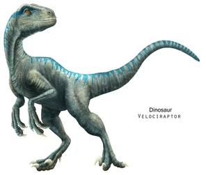
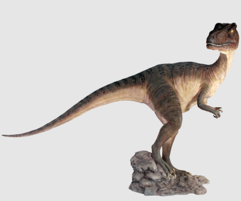

Del Triceratops destacan sus 3 grandes cuernos que aparecen en la cabeza, de ahí su nombre.
Se estima que medía cerca de 9 metros de longitud, y llegar a una altura de hasta 4 metros
El Triceratops era un gran herbívoro con un hocico que terminaba en un estrecho pico, que habría servido mejor para arrancar plantas que para morder.

Era un animal carnívoro que media solo 1,8 metros y pesaba alrededor de unos 15 kilos, con unas garras en sus patas que le posibilitaba la tarea de agarrar fuertemente a sus presas.
Este dinosaurio vivió durante el Jurásico más tardío, midiendo 2 metros de largo y pesaba casi 2 toneladas y tenia unas protuberancias bastante marcadas delante de sus ojos.
Era principalmente carnívoro, por lo que se alimentaba de otros pequeños dinosaurios.
